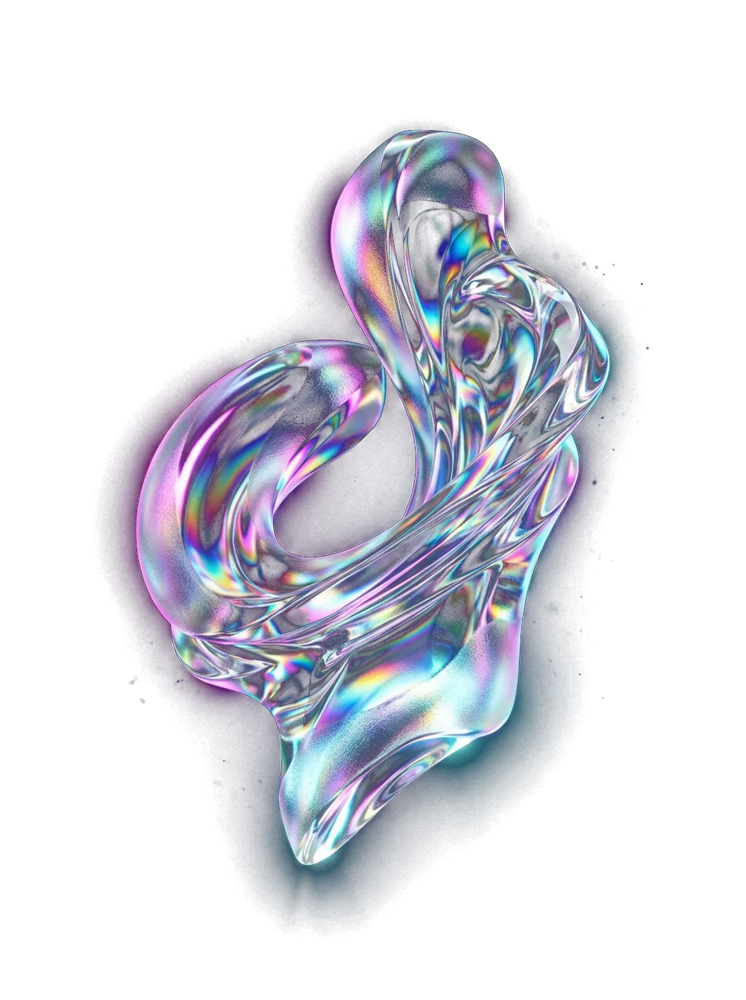

O cérebro por trás do crescimento previsível. Conecta captação, conversão e retenção em um único sistema, para o seu negócio manter a agenda cheia todo mês.
Analisamos seu negócio e mostramos onde você está perdendo clientes.
Sistema Osten
Em vez de ações isoladas, montamos um fluxo em que cada etapa alimenta a próxima: quem chega vira contato, o contato vira cliente e o cliente fica.
Reconheçaocenário.Seumdestespontosexistehoje,temreceitaficandonamesa.
Horários ociosos e capacidade parada mesmo com esforço no boca a boca.
Crescimento imprevisível, refém de quem já é cliente lembrar de você.
Verba investida sem retorno claro e criativos sem estratégia.
O contato chega no WhatsApp e ninguém acompanha até virar cliente.
Meses bons e ruins sem entender o porquê nem como reagir.
Comunicação parecida com a de qualquer outro negócio do bairro.
Análise gratuita Osten
Quatro perguntas rápidas. No fim, você manda as respostas no nosso WhatsApp e recebe o seu plano de crescimento.
PERGUNTA 1 DE 4
Envie as respostas no WhatsApp e a gente devolve onde o seu negócio está perdendo clientes.
Receber meu plano no WhatsAppCaptação
Anúncio, Google Meu Negócio e SEO local jogam a isca no lugar certo. O lead que chega já procura o que você vende, e a gente puxa até ele virar cliente.
Método Fluxo Previsível
Cada etapa tem um trabalho e uma métrica mestra. Juntas, transformam contato em cliente e cliente em receita recorrente.
Encontramos pessoas realmente interessadas no que você vende, não curiosos.
Métrica mestra
Contatos qualificados por mês
Transformamos interessados em clientes. Quem pergunta o preço e some passa a ser acompanhado.
Métrica mestra
% de contatos que viram clientes
A base cresce porque as saídas diminuem, não só porque entram clientes novos.
Métrica mestra
Permanência média, em meses
O solo antes da semente
A maioria das agências joga anúncio em perfil abandonado e espera colheita. Na Osten, cuidamos do solo primeiro: o seu negócio não é um pacote de serviços soltos, é um único sistema em que cada parte alimenta a outra.
Google Meu Negócio gera confiança em quem te encontra.
Instagram sustenta essa confiança.
Tráfego pago traz o volume certo de contatos.
Atendimento transforma esse volume em cliente.
Quando uma parte falha, o sistema inteiro sente. Por isso não vendemos peças soltas: construímos o organismo completo que faz o seu negócio crescer.
Sistema Osten
Captação
Tráfego qualificado, direcionado por intenção real de compra.
Conversão
Funis, automações e CRM para aumentar o fechamento.
Retenção
Cliente que fica mais tempo, menos cancelamento e receita recorrente.
Benefícios
Saber quantos clientes entram no mês, antes do mês começar.
Mais contatos virando cliente com atendimento que acompanha.
Verba direcionada para quem tem intenção real de comprar.
Marca que se diferencia do resto do bairro.
Aparecer para quem procura perto de você.
Plano feito para o seu mercado e a sua concorrência local.
Meta Ads e Google Ads geridos com método e número.
Contato direto com quem cuida da sua conta.
Nosso diferencial
Nascemos atendendo estúdios de Pilates e levamos o mesmo sistema para negócios que precisam manter a capacidade ocupada.

Resultados
Clientes reais · primeiro mês com a Osten
15
matrículas fechadas no primeiro mês
Carla Mattos · Estúdio de Pilates
6
planos fechados, mais de R$ 3.300 em contratos
Rosangela · Estúdio de Pilates
5
pacientes fechados em um mês
Carla Alves · Fonoaudiologia
9
negócios locais atendidos hoje
4
segmentos: Pilates, fonoaudiologia, barbearia e locação de veículos
3
etapas integradas: captação, conversão e retenção
Analisamos sua presença digital, concorrência, mercado local e perfil de cliente ideal, e mostramos onde você está perdendo clientes.
Desenhamos um plano personalizado e implantamos o sistema por fases, começando pelo que tem maior potencial de retorno.
Toda decisão olha para as métricas mestras. O que funciona fica, o que não funciona sai.
Perguntas frequentes
Ficou alguma dúvida? Agende o diagnóstico gratuito e pergunte direto para a gente.
É o sistema integrado da Osten que conecta captação, conversão e retenção em um fluxo contínuo. Em vez de ações isoladas, cada etapa alimenta a próxima e tem uma métrica mestra para acompanhar.
O investimento é dividido entre o serviço e a verba de tráfego, ajustado ao porte do seu negócio. Na análise gratuita apresentamos os cenários adequados ao seu momento.
Sim. O trabalho é 100% remoto e adaptamos a estratégia à concorrência local de cada cidade.
Ajuda muito, mas não é obrigatório. Temos um método para produzir criativos com o mínimo de exposição, mesmo com celular.
Sim. Fazemos o diagnóstico do que roda hoje e reestruturamos as campanhas dentro do método, ligando o anúncio ao atendimento e à retenção.
Os primeiros contatos qualificados costumam surgir nas primeiras semanas. A previsibilidade se consolida entre 60 e 90 dias, quando os dados acumulados permitem ajustes mais precisos.
Não. Ele potencializa a equipe que você já tem, com estrutura, scripts e sistemas que ampliam o trabalho feito hoje.
Recomendamos. Uma página com chamada clara, prova social e contato direto converte mais do que mandar o tráfego só para as redes sociais. A Osten cria essa página integrada às campanhas.
Trabalhamos com contratos claros e transparentes, sem letras miúdas. Os detalhes a gente conversa direto na análise.
Vai além de criar anúncios: pesquisa de palavras-chave, segmentação por comportamento e intenção, criativos que geram identificação e otimização contínua com dados reais.
Capta quem já está procurando o seu serviço, como "Pilates perto de mim" ou "Pilates em São José dos Campos". Campanhas de busca local com localização e oferta clara geram contatos de alta intenção.
Constrói desejo no Instagram e no Facebook: mostra o ambiente, a equipe e a transformação dos clientes para pessoas com perfil compatível, com remarketing para quem ainda não fechou.
Perfil otimizado, avaliações e conteúdo com termos da sua região para aparecer nas primeiras posições sem depender só de anúncio.
Página com oferta clara, prova social e contato em um toque, integrada às campanhas e ao atendimento.
Scripts, acompanhamento multitoque e IA para responder na hora, para nenhum contato esfriar.
Vamos aumentar o fluxo de clientes do seu negócio. Comece pelo diagnóstico gratuito.
Agendar diagnóstico gratuito